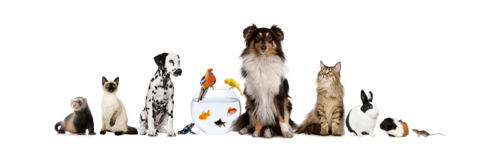

Peluqueria Canina La salud del animal tambien debe pasar por un control de la salud capilar, verificando la ausencia de dematopatias como seborreas, prurito o piodermias. Somos fanáticos de la salud integral de las mascotas y disponemos de peluqería canina con el champú adecuado para cada tipo de piel, tratando con champús medicamentosos en los casos que lo requieran como parte de un plan integral de salud animal. Nuestro lema es: "Cuidado y salud sin prisas", cada animal requiere su tiempo y debe pasar por las manos de nuestra peluquera llevandose un grato recuerdo con la experiencia de forma que la próxima visita la hará sin miedos y con confianza. Es importante destacar que la peluqería canina no solo es importante para mantener el aspecto fisico del perro, sino también para su salud y bienestar. Un pelaje limpio y bien cuidado ayuda a prevenir problemas de piel y elimina la acumulación de suciedad y bacterias. Es necesario solicitar cita previa. 
 Peluqueria Canina
Peluqueria Canina